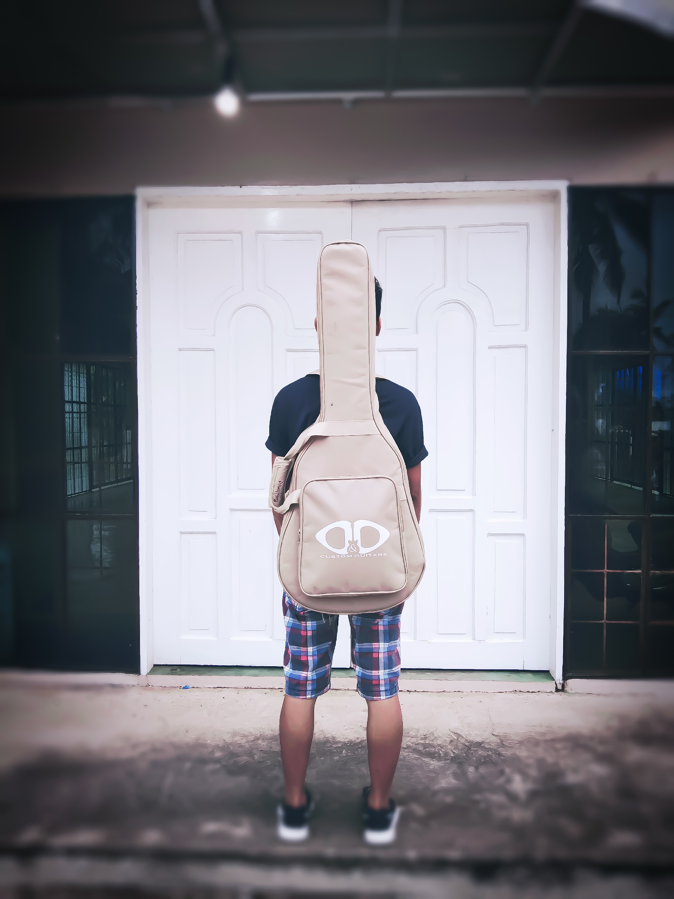

<section class="home">

<mat-sidenav-container class="app-sidenav-container">
<mat-sidenav mode="side" opened class="app-sidenav">
    <mat-toolbar color="primary">
        Menu
    </mat-toolbar>
    <mat-list>
        <mat-list-item><a routerLink="contact" routerLinkActive="active">Contacts</a></mat-list-item>
        <mat-list-item><a routerLink="profile" routerLinkActive="active">Profile</a></mat-list-item>
        <mat-list-item><a routerLink="gallery" routerLinkActive="active">Gallery</a></mat-list-item>
    </mat-list>
</mat-sidenav>

<div class="app-sidenav-content">
    <mat-toolbar color="primary">
    </mat-toolbar>
    <router-outlet></router-outlet>
</div>


</mat-sidenav-container>
</section>